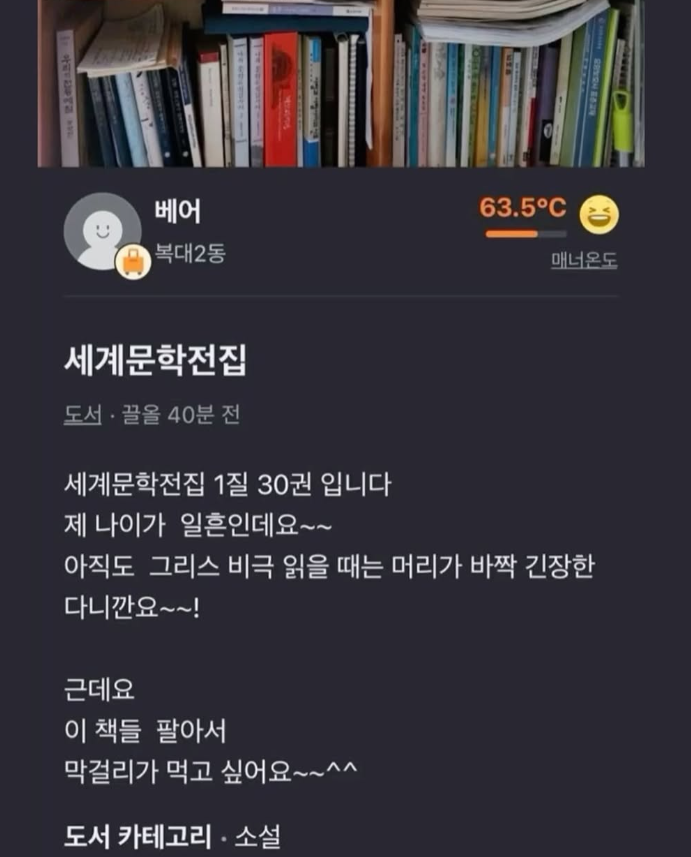

막걸리는 못참지

막걸리는 못참지
나쁜 말 ㄴㄴ...
요즘 칠순은 생각보다 정정하시다

콜렉터가 사망하고 그냥 분리수거 되느니
좋은 주인 만나게 보내주는게 맞을 수 있음

매우 솔직하다
나도 미개봉한 저렴이 피겨 있는데 팔까 하다가 팬덤에 기부하기로 했다
막걸리 확인
복대 2동이면 청주인가?
내가 저거 봤으면 책 받고
어르신이랑 막걸리를 먹으면서
밤새도록 문학 얘기를 했을 텐데
말투 재밌으시네 ㅋㅋㅋㅋ 한잔 사드리고싶구만
당근에 올린 글도 문학적이구만.
편의점에서 막걸리 존나 잘 팔리는 거 같음. 술 사러 가면 막걸리가 제일 없어.
유통기한이 짧아
막걸리 사드릴게요 책은 됐고 그리스 비극 얘기나 좀 해 주세요
어디부터 어디까지 문학전집인거야?
슬슬 정리하시는구나.....